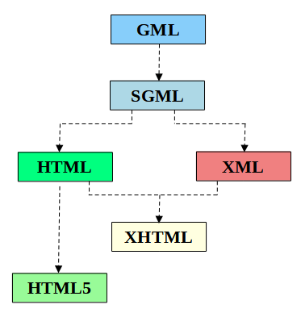
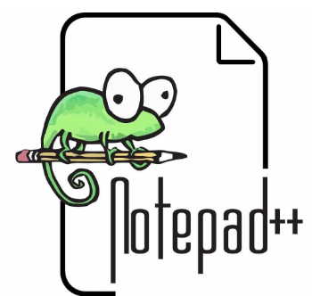

<!DOCTYPE html>
<html lang="es">
	<head>
		<meta charset="utf-8">
		<title>Introducción a los lenguajes de marcas</title>
		<meta name="viewport" content="width=device-width, initial-scale=1.0">
		<link rel="stylesheet" href="../../../reveal/dist/reveal.css">
		<link rel="stylesheet" href="../../../reveal/dist/theme/white.css" id="theme">
		<link rel="stylesheet" href="../../../reveal/plugin/highlight/custom.css">
	</head>

	<body>
		<div class="reveal">
			<div class="slides">
                <section data-markdown>
<script type="text/template">
## Introducción a los lenguajes de marcas
</script>
</section>

<section data-markdown>
<script type="text/template">
## Ordenadores y almacenamiento de la información

- ¿Cómo almacena la información un ordenador?
- ¿Cómo almacena un archivo de texto del bloc de notas?
- ¿Cómo almacena un archivo de audio o una foto?
   - Archivos **binarios**
</script>
</section>

<section data-markdown>
<script type="text/template">
## Sistemas de codificación

- Permiten adaptar un archivo de texto al idioma o región en que se escribe
- ¿Cómo almacenar acentos, eñes o símbolos de un determinado alfabeto?
</script>
</section>

<section data-markdown>
<script type="text/template">
## Paso 1: Sistemas ASCII

- *American Standard Code for Information Interchange*
- Versión inicial: 7 bits, sólo admite caracteres alfabeto inglés 
- Versión final: 8 bits (ASCII extendido): incluye acentos, eñes, etc 
   - Consultar [aquí](https://www.ascii-code.com/)
- No tienen cabida otros caracteres (cirílicos, japoneses, etc.)

</script>
</section>

<section data-markdown>
<script type="text/template">
## Paso 2: Estándares ISO

- *International Organization for Standardization*
- Ideó una forma de clasificar alfabetos por regiones
- **ISO-8859-1**: Europa Occidental, incluyendo vocales acentuadas, y símbolos como la eñe.
- **ISO-8859-2**: Europa Central y Oriental.
- ... etc.
- Problema: hay que indicar el sistema en el archivo para que reconozca los caracteres adecuados

</script>
</section>

<section data-markdown>
<script type="text/template">
## Paso 3: Sistemas Unicode

- Aúna en un solo sistema todos los símbolos:
- 1 byte para ASCII + ISO-8859-1
- 2 bytes para incluir cirílico, griego, árabe...
- 3 bytes para incluir chino y japonés
- 4 bytes para símbolos matemáticos, lenguas muertas...
- Versiones: UTF-8, UTF-16, UTF-32

</script>
</section>

<section data-markdown>
<script type="text/template">
## Incompatibilidades

- **Archivos binarios**: dependen del software con que se crean, a veces no pueden abrirse con software diferente
- **Archivos de texto**: en principio no presentan problema, PERO si añadimos información de formato (fuentes, tamaños, colores), se convierten en archivos binarios
- Solución: lenguajes de marcas

</script>
</section>
    
<section data-markdown>
<script type="text/template">
## Lenguaje de marcas

- Permite codificar un documento incorporando etiquetas o marcas que:
   - Contienen información adicional acerca de la estructura del documento (secciones, apartados...).
   - Contienen información adicional sobre la presentación (formatos, colores, tamaños...)

</script>
</section>

<section data-markdown>
<script type="text/template">
## Ejemplo: TeX

Ideado para textos científicos (años 70)

```
\documentclass[12pt]{article}
\usepackage{amsmath}
\title{\Ejemplo}
\begin{document}
Este es el texto ejemplo de \LaTeX{}
Con datos en \emph{cursiva} o \textbf{negrita}.
Ejemplo de f\'ormula
\begin{align}
E &= mc^2
\end{align}
\end{document}
```

</script>
</section>

<section data-markdown>
<script type="text/template">
## Ejemplo: JSON

Ideado para representar textualmente objetos de una aplicación. Por ejemplo, una agenda de contactos

```json
[
    {
        "nombre": "Juan Pérez",
        "direccion:": "C/Ávila, 12",
        "telefono": "611223344"
    }, 
    {
        "nombre": "Elena García",
        "direccion": "Avda. de las Naciones, 25",
        "telefono": "600998877"
    },
    ...
]
```

</script>
</section>
    
<section data-markdown>
    <script type="text/template">
    ## Origen y evolución de HTML
    
    <table>
        <tr>
            <td width="35%" align="center" valign="middle">
                
            </td>
            <td width="65%" align="justify" style="font-size:0.75em">
                - Años 60: **GML** emplea marcas precedidas de ':' para estructurar documentos.
                - Años 80: **SGML**, metalenguaje.
                - Años 90: **HTML**, diseñado para la organización lógica del contenido y no para su presentación. Surgen las **hojas de estilo**. 
                - 2000: **XML** y **xHTML**, ambos complementarios.
                   - *XML* estructura información de cualquier tipo y la muestra en cualquier dispositivo mientras que HTML estructura el contenido de un documento web y la presenta en un navegador.
                   - *xHTML* extiende HTML y permite compatibilidad con nuevos formatos de datos.
                - A finales de 2009 se interrumpe el trabajo sobre xHTML 2.0 y prevalece **HTML5** como estándar.
            </td>
        </tr>          
    </table>
        
</script>
</section>

<section data-markdown>
<script type="text/template">
## Marcado de texto en GML

```XML
:h1.Chapter 1: Introduction
:p.GML supported hierarchical containers such as 
:ol.
:li.Ordered lists (like this one)
:li.Unordered lists and
:li.Definiton lists
:eol.
```
</script>
</section>

<section data-markdown>
<script type="text/template">
## Marcado de texto en XML

```XML
<biblioteca>
    <libro>
        <titulo>El juego de Ender</titulo>
        <autor>Orson Scott Card</autor>
        <paginas>325</paginas>
    </libro>
    <libro>
        <titulo>La tabla de Flandes</titulo>
        <autor nacimiento="1951">Arturo Pérez Reverte</autor>
        <paginas>384<paginas>      
    </libro>
</biblioteca>
```
</script>
</section>

<section data-markdown>
<script type="text/template">
## Características de los lenguajes de marcas

- Son archivos de **texto plano**.
- Muestran la información de forma **compacta**.
- **NO** son lenguajes de programación.   
- Constan de:
   - **Vocabulario** de elementos a utilizar
   - **Reglas gramaticales** que indiquen cómo colocar los elementos

    
</script>
</section>

<section data-markdown>
<script type="text/template">
## Tipos de lenguajes de marcas

- **Lenguajes de presentación**: definen el formato pero no la estructura.
    - RTF
- **Lenguajes descriptivos o estructurales**: definen la estructura pero no el formato 
    - XML, YAML, JSON
- **Lenguajes híbridos**: definen la estructura y el formato, bien de forma total o parcial. 
    - HTML, xHTML
        
</script>
</section>
        
<section data-markdown>
<script type="text/template">
## LM según su funcionalidad

- **Lenguajes para generar documentación electrónica**
    - RTF, TeX, DocBook, ...
- **Lenguajes para tecnologías de Internet**
    - HTML o xHTML, RSS, SOAP, ...
- **Lenguajes de propósito específico**
    - SVG, FXML, XSLT, ...
</script>
</section>

<section data-markdown>
<script type="text/template">
## Herramientas

<table>
    <tr>
        <td width="25%" align="center">
            <a href="https://notepad-plus-plus.org/" alt="Notepad++" title="Notepad++">
                <figure>
                    
                </figure>
                <figcaption>
                    Notepad++
                </figcaption>
            </a>
        </td>
        <td width="25%" align="center">
            <a href="https://code.visualstudio.com/" alt="Visual Studio Code" title="Visual Studio Code">
                <figure>
                    
                </figure>
                <figcaption>
                    VS Code
                </figcaption>
            </a>
        </td>
        <td width="25%" align="center">
            <a href="https://www.sublimetext.com/" alt="Sublime Text" title="Sublime Text">
                <figure>
                    
                </figure>
                <figcaption>
                    Sublime Text
                </figcaption>
            </a>
        </td>
        <td width="25%" align="center">
            <a href="https://atom.io/" alt="Atom" title="Atom">
                <figure>
                    
                </figure>
                <figcaption>
                    Atom
                </figcaption>
            </a>
        </td>
    </tr>

</script>
</section>

<section data-markdown>
<script type="text/template">
## Ejercicio 1

- Crea un archivo llamado **prueba.html**. 
- Ábrelo con **VS Code** y copia el  código de abajo.
- Muestra la previsualización en tu navegador usando la extensión ***Open in browser*** que debes instalar
previamente.

```HTML
    <!DOCTYPE html>
    <html>
        <body>
            <h1>Bienvenido/a a la página de prueba</h1>
        </body>
    </html>
```

</script>
</section>    

<section data-markdown>
<script type="text/template">
## Ejercicio 2

- Crea un archivo llamado **biblioteca.xml**. 
- Ábrelo con **VS Code** y copia el  código de abajo.
- Muéstralo en un navegador y observa cómo se representa la información.

```xml
<biblioteca>
    <libro>
        <titulo>El juego de Ender</titulo>
        <autor>Orson Scott Card</autor>
        <paginas>325</paginas>
    </libro>
    <libro>
        <titulo>La tabla de Flandes</titulo>
        <autor nacimiento="1951">Arturo Pérez Reverte</autor>
        <paginas>384<paginas>      
    </libro>
</biblioteca>
```

</script>
</section>   
            </div>
		</div>

		<script src="../../../reveal/dist/reveal.js"></script>
		<script src="../../../reveal/plugin/zoom/zoom.js"></script>
		<script src="../../../reveal/plugin/markdown/markdown.js"></script>
		<script src="../../../reveal/plugin/highlight/highlight.js"></script>
		<script>

			// Also available as an ES module, see:
			// https://revealjs.com/initialization/
			Reveal.initialize({
				controls: false,
				progress: false,
				center: true,
                hash: true,
                width: "80%",

				// Learn about plugins: https://revealjs.com/plugins/
				plugins: [ RevealZoom, RevealMarkdown, RevealHighlight ]
			});

		</script>

	</body>
</html>
